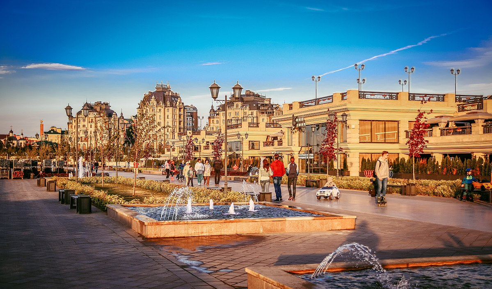

КРАСИВАЯ КАЗАНЬ

Каза́нь (тат. Казан) — город в России, столица Республики Татарстан, порт на левом берегу реки Волги при впадении в неё реки Казанки. Крупнейший по численности населения город в Приволжском федеральном округе и на реке Волге. Один из крупнейших экономических, научных, образовательных, религиозных, культурных и спортивных центров России. Казанский кремль входит в число объектов Всемирного наследия ЮНЕСКО. Город трудовой доблести.
Достопримечательности Казани
Казанский кремль

Казанский кремль (тат. Казан кирмәне) — древнейшая часть и цитадель Казани, комплекс архитектурных, исторических и археологических памятников. Расположен на мысу высокой террасы левого берега Казанки в центре города, за более чем километр от её устья. Включает в себя: - археологические остатки первого (XII–XIII вв.), второго (XIV–XV вв.) и третьего городищ (XV–XVI вв.); - собственно белокаменный кремль; - ряд храмов и зданий, имеющих большую историко-архитектурную и культурную ценность. Является официальной резиденцией Главы Республики Татарстан и объектом Всемирного наследия ЮНЕСКО с 2000 года.
Башня Сююмбике

Башня расположена внутри Казанского кремля, в отдалении от крепостных стен, и благодаря своему положению несла функцию дозорной (сторожевой) крепостной башни. С её вершины открывается широкий вид на реки Казанку, Волгу и окрестности. Фундамент башни покоится на дубовых сваях. Стены кирпичные, на известковом растворе. В нижнем ярусе устроен сквозной проезд на оберкомендантский (позднее губернаторский) двор, перекрытый распашными воротами. Башня состоит из семи ярусов: первые три яруса в плане квадратные разновысотные четверики и имеют открытые галереи-гульбища; следующие два — восьмиугольные (восьмерики); ещё два — гранёный кирпичный шатёр и дозорная вышка; последний — зелёный шпиль, увенчанный золочёным «яблоком», на котором покоится полумесяц (до 1918 года — двуглавый орёл). Грани всех ярусов украшены лопатками или тонкими кирпичными валиками. На западном и восточном фасадах пилоны нижнего яруса имеют по 2 приставные колонны коринфского ордера, пересечённые посередине высоты «типично русскими горизонтальными валиками»
Мечеть Кул Шариф

Мечеть «Кул-Шариф» (тат. «Кол Шәриф» мәчете) — главная джума-мечеть республики Татарстан и города Казани (с 2005 года), расположенная на территории Казанского кремля. Одна из главных достопримечательностей города. Строительство храма было начато в 1996 году как воссоздание легендарной многоминаретной мечети столицы Казанского ханства, центра религиозного просвещения и развития наук Среднего Поволжья XVI столетия. Историческая мечеть была разрушена в октябре 1552 года во время штурма Казани войсками Ивана Грозного. Воссозданная мечеть названа в честь последнего имама сеида Кул Шарифа, одного из предводителей обороны Казани. Мечеть находится в западной части Казанского кремля, в центре собственной площади-двора. Комплекс мечети представляет собой композицию из главного здания (с шестью минаретами и двумя пристроенными по бокам полупавильонами) и отдельно стоящего двухэтажного административно-хозяйственно-пожарного павильона, выполненного в такой же стилистике. Комплекс и площадь мечети пространственно увязаны с окружением (бывшим юнкерским училищем и юго-западной фасадной стеной кремля) с целью придания размещаемому объекту градостроительной значимости и обогащения панорамы кремля, обозреваемой как визитная карточка города с площади Тысячелетия и реки Казанка.
Кремлевская набережная
Набережная является очень популярным местом отдыха горожан и посещений туристов круглогодично и с утра до позднего вечера. На ней часто проводятся фестивали, выставки, творческие вечера, соревнования и другие массовые мероприятия. Летом 2015 года устроенные у набережной вышки и трибуны стали местом проведения спортивных соревнований по хай-дайвинговым прыжкам в воду и плаванию на открытой воде в ходе прошедшего в городе Чемпионата мира по водным видам спорта. Летом 2017 и 2018 годов набережная стала смотровой площадкой для нескольких десятков тысяч зрителей впервые проведённого в России этапа мирового чемпионата по гонкам лёгкой спортивной авиации Red Bull Air Race. С набережной открываются эффектные панорамные виды: на восточный склон Кремля, на Дворцовую площадь с Дворцом земледельцев и ЖК «Дворцовая набережная», на расположенные на холмах восстановленный Казанский собор Божьей Матери и Церковь Святой Великомученицы Параскевы Пятницы, «скайлайн» новой застройки заречной части города (Ново-Савиновский район).
Улица Баумана

Улица Баумана — одна из самых старых улиц Казани. В эпоху Казанского ханства она называлась Ногайской дорогой. В 1552 году, во время штурма Казанского Кремля московскими войсками Ивана Грозного, обе его стены южнее и севернее улицы были проломлены взрывами, а улица была названа сначала Проломной, а затем Большой Проломной. В XVI веке, продолжая уже имевшуюся застройку северной части улицы, в её южной части возникла Новая слобода, получившая позже название Богоявленской по названию сооружённой здесь церкви. В 1930 году, улица была переименована в честь выходца из Казани революционера Баумана. Это название сохранилось до настоящего времени, хотя в постсоветское время предлагалось её переименовать в улицу Шаляпина.